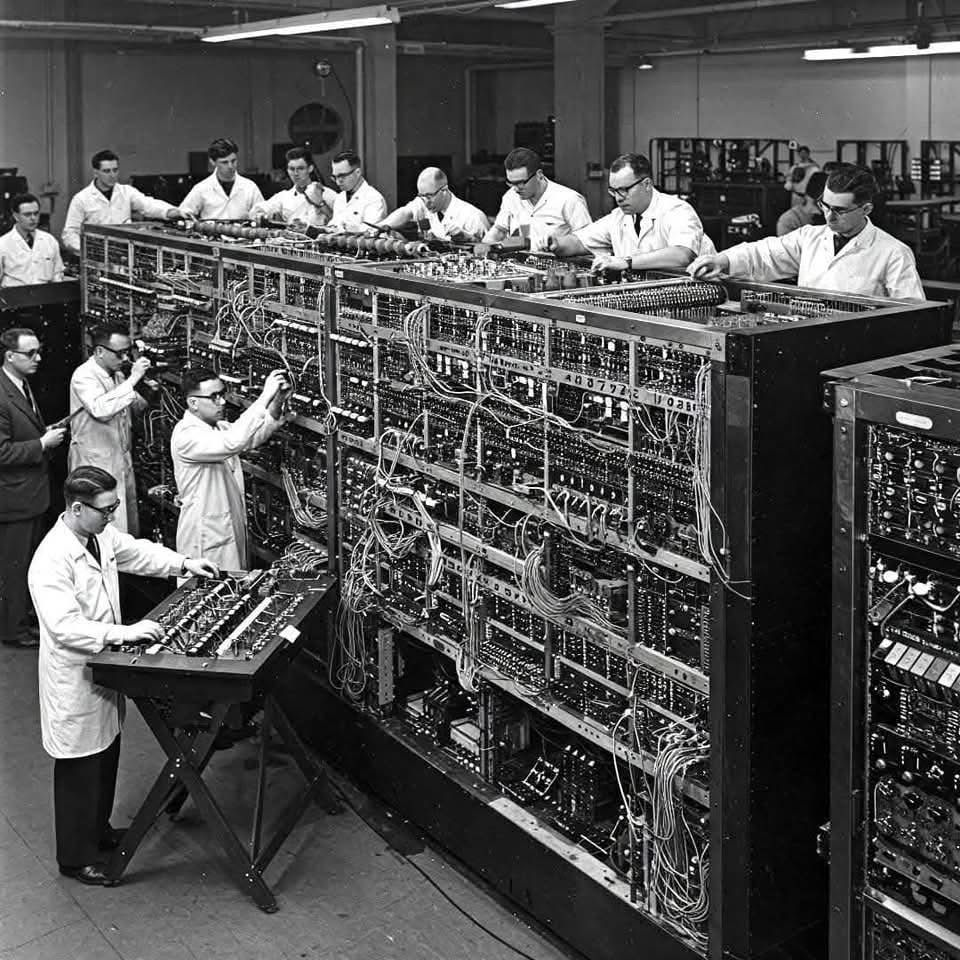

1. عصر ما قبل الحوسبة (المنطق الميكانيكي)
أمثلة رئيسية: آلة الحياكة لجاكار، المحرك التحليلي لباباج.
الأهمية: إدخال مفهوم البطاقات المثقوبة التي تحتوي على تعليمات (برنامج) قابلة للتكرار والتغيير، وهو أساس فكرة البرنامج المخزن.
2. الجيل الأول: الحواسيب العملاقة (ENIAC)
التكنولوجيا: اعتمدت على الصمامات المفرغة (Vacuum Tubes) وكانت ضخمة وتستهلك طاقة هائلة.
الأهمية: أول حواسيب إلكترونية قابلة لإعادة البرمجة، وتستخدم بشكل أساسي في الحسابات العسكرية والعلمية.

3. ظهور اللغات عالية المستوى
التاريخ: خمسينيات وستينيات القرن العشرين.
أمثلة: FORTRAN و COBOL.
الأهمية: الانتقال من لغات الآلة المعقدة إلى لغات تشبه اللغة الإنجليزية. هذا جعل البرمجة أسرع وأسهل.
4. عصر الحواسيب الشخصية والإنترنت
التاريخ: ثمانينيات القرن العشرين وحتى الألفية الجديدة.
أمثلة: ظهور أنظمة التشغيل الرسومية، وتطوير لغات مثل C، ++C، Java.
الأهمية: أصبحت البرمجة مخصصة للمستهلك العادي، وفتح الإنترنت الباب أمام تطوير تطبيقات الويب.